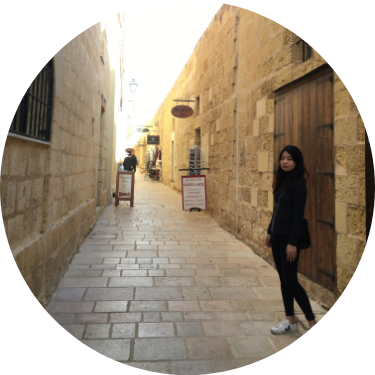

ABOUT ME
2018年から2020年までの約3年間、国外の英語圏でない国(公用語が3カ国語)に突然住むことになり、当初は言語の壁に大変苦しめられました。書いてあることも話しかけられても理解できない、ましてや自分が伝えたいことも伝えられない。毎日もどかしさの連続でした。そのような状況の中で、改めて実感したもののひとつが「デザインの力」でした。
商業施設のデザイン、地図アプリ、ホテルの予約、各種チケットの購入…など言葉が分からずとも、生活の隅々まで施されたありとあらゆる「デザイン」のおかげで、なんとかある程度は生きてこれたような気がします。そのような経験を通して、今度は自分が困っている人の助けになりたいと強く感じWebデザイナーになろうと決意をしました。
パソコンやスマホの操作が苦手な方、便利なのは分かっているけど新しいアプリやオンラインのサービスは何となく敬遠してしまう方、私のように母国語での生活ができず困っている方…「デザインの力」で助けになれることは、たくさんあるのではないかと思います。そういった方々の一助となるようなWebデザイナーを目指しています。
スズモト ユミ
1985年福岡生まれ
外国語学部を卒業後、学生時代より興味のあったインテリア雑貨の世界に就職。接客などの業務を中心に行う傍ら、店舗のディスプレイに携わる。同じ商品でも、置く場所やディスプレイ一つで見え方が変わったり、売上に影響が出たりすることに面白さを感じる。休みの日は、様々なインテリアショップのディスプレイを見に行き、研究し、自分の引き出しを増やすようにしていた。
結婚後は愛知県に引っ越した後、夫の転勤に伴い2018-2020年末の三年間をベルギーで暮らすことに。言語や文化のまったく異なる国で、日々の小さなことにつまづきながらも、まわりの人に助けられ、また新しいことに挑戦しながら過ごす日々は人生の良い経験・財産になったと思っている。趣味はジャズ鑑賞と旅行と美術館巡り。
SKILLS
デザインの基礎を学習し、それに基づき様々なデザインテーマでワイヤーフレーム・モックアップを一から作成することが可能です。ちらしやバナーなどのデザインも可能です。モックアップを作成する際は、書き出し用の画像サイズやマージンの数値を揃えるなど、コーディングが行いやすいように心がけています。
使用可能ソフトHTMLとCSSとjQueryを使用してWebサイトを構築することが可能です。課題製作では、レスポンシブ対応を意識したサイト作りを行いました。
日常会話レベルの英語とフランス語が可能です。「フランス語でかっこいい店名をつけてほしい」、「カフェメニューをフランス語で考えたい」、「ちょっとこのフランス語読んでほしい」…などちょっとした翻訳であれば対応できます。お気軽にご相談ください。
WORKS